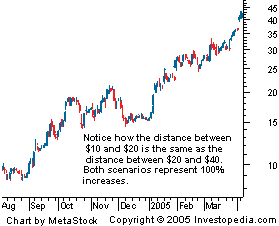

A type of scale used on a chart that is plotted in such a way that two equivalent percent changes are represented by the same vertical distance on the scale, regardless of what the price of the asset is when the change occurs. The distance between the numbers on the scale decreases as the price of the underlying asset increases. This is the case because a $1 increase in price becomes less influential as the price heads higher since it now corresponds to less of a percentage change than it did when the price of the asset was at a lower level. Also referred to as a "log scale".
 Logarithmic price scales are generally accepted as the default setting for most charting services, and they're used by the majority of technical traders. Common percent changes are represented by an equal spacing between the numbers in the scale. For example, the distance between $10 and $20 is equal to the distance between $20 and $40 because both scenarios represent a 100% increase in price. Contrast this to "linear price scale".
{kind=link}